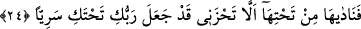

yedirmek için onu hurma dalının altına getirmiştir.
Meryem “keşke bundan önce ölseydim.” Yani bu günden önce veya Celâleyn’in
dediği gibi bu işten önce ölseydim. Cebrâil (a.s.) ile arasında geçen güzel vaadi bildiği
halde Hz. Meryem’in böyle söylemesi, insanların âdeti gereği, onlardan utandığı içindir.
Yoksa Allâh’ın emrini kerih gördüğünden değildir. Yine insanların onu ayıplamasından
ve onun hakkında konuşmaları sebebiyle günaha düşmelerinden sakınmak veya zor
durumda kaldıklarında sâlih kimselerin yaptığı gibi yapmak için böyle demiştir. Nitekim
Hz. Ömer’in yerden bir saman çöpü alıp: “Keşke bu saman çöpü olsaydım da bir şey
olmasaydım.” dediği, Hz. Bilal’in de “Keşke annesi Bilal’i doğurmasaydı” dediği
rivayet edilmiştir.
Bazen ‘Ey Rabbim benim için artır.’ derim
Bazen de ‘Keşke beni anam doğurmasaydı.
et-Te’vîlâtü’n-Necmiyye’de şöyle der: “Bundan önce”, hâmilelikten önce demektir.
Çünkü Hz. Meryem bu ifâdeyle âdeta şöyle demiş oluyordu: “Çünkü benim hâmile
kalmam ve doğurmam sebebiyle Allah birçok kimseyi cehenneme sokacak. Zira bazısı
beni zinâ yapmakla suçlayacak, bazısı da oğlumu Allâh’ın oğlu olmakla itham edecek.”
“Unutulup gitseydim.” Yani unutulan, değersiz, unutulmaya lâyık, asla bir şey
sayılmayan, hiçbir insanın hatırına gelmeyen bir kimse olsaydım. “dedi.”
et-Te’vîlât’ta şöyle der: Yoklukta “unutulup gitseydim” var ederek Allah beni
anmasaydı.”
Kâşifî de şöyle der: “Yani keşke hiç kimse beni bilmeseydi ve benden hesap
sormasaydı. Halbuki Beytü’l-makdis ulemâsının hepsi, ben onların imamlarının kızı
olduğum için beni tanırlar. Zekeriyya (a.s.)’ın kefâletindeyim ve henüz bekâretim zâil
olmadı. Bir eşim olmadığı halde çocuk doğurdum. Utancımdan ne edeceğimi
bilmiyorum, dedi.”
Her ne kadar bu iş yüzünden nazar eder, bakarım
Fakat benim gibi bir mihnetzede göremem
24. Altından (ruh) ona şöyle seslendi: “Üzülme, Rabb’in alt tarafında bir su arkı
var etti.”
“Altından (ruh) ona şöyle seslendi” Yani Meryem’in endişesini duyunca ona
seslenen Cebrâil’di. Çünkü İsa, annesi onu kavminin yanına getirene kadar
konuşmamıştır. Cebrâil, tepenin altından Meryem’in bulunduğu yerden daha alçakta bir